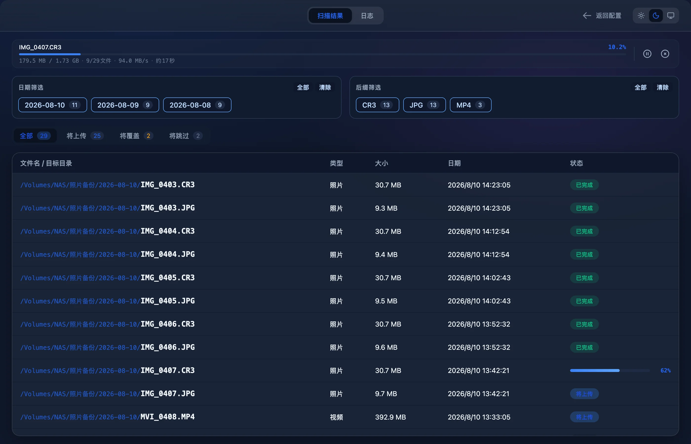

插上存储卡，先看清每个文件去哪
这一章讲从插卡到推出的整条备份流程：选来源和目标，扫描收哪些文件、日期怎么定，文件归档到哪里、同名文件怎么处理，以及上传时的进度、暂停、取消和失败重试。相机存储卡和大疆设备各有一个模式，用法相同，收的格式不同。


一次备份的流程
大师拷贝把一次倒卡分成三个画面：配置、扫描结果、挑图。顶栏中间的页签跟着画面变。配置画面显示 SD卡模式 DJI模式 联机拍摄 三个页签；进入结果画面后换成 扫描结果 和 日志，右上角多出 返回配置。
- 在顶栏选 SD卡模式 或 DJI模式。
- 在左边的源目录卡片里点 选择目录，选中存储卡或卡上的某个文件夹，例如
/Volumes/EOS_DIGITAL。 - 在右边的目标目录卡片里选备份位置，例如已经挂载的
/Volumes/NAS/照片备份。 - 按需要调整底栏的三个开关，点 开始扫描。
- 扫描完成后自动进入结果页。按日期、后缀筛选，确认每个文件的目标位置和状态。
- 点 开始上传 拷贝当前筛选下的全部文件，或者点 选择文件 只勾选一部分。
- 全部成功后弹出 🎉 备份完成。可以直接 推出设备，也可以进入挑图，把照片导入 Eagle。
整个过程不改动存储卡上的任何文件。扫描只读取文件信息，上传只从卡上读数据，所有写入都发生在目标目录里。
- 扫描中按钮变成 扫描中... 并转圈。配置表单和顶栏的模式页签同时锁住，扫描到一半不能改路径或切模式。
- 上传中返回配置 不可点，结果页的操作按钮暂时隐藏。可以切到 日志 页签看逐条记录。
- 日志每条记录带时分秒，信息、成功、警告、错误分别用蓝、绿、黄、红标出。日志只保存在本次运行里，退出应用后清空；也可以点 清空日志 手动清掉。
配置页：来源、目标与三个开关


配置页左右两张卡片，中间一个箭头，意思是从左拷到右。
源目录
左边卡片的角标是 📂 源目录，右上角显示当前模式。标题写着 选择SD卡路径，DJI 模式下是 选择DJI设备路径。还没选路径时，这里提示 请选择包含照片/视频的文件夹。
点 选择目录 会打开 macOS 自带的文件夹选择框。可以选整张卡的根目录 /Volumes/EOS_DIGITAL，也可以只选其中一个文件夹，例如 /Volumes/EOS_DIGITAL/DCIM/100CANON。扫描会进入所选文件夹下的每一层子文件夹。旁边的心形按钮 加入收藏 把当前路径收进下方的收藏夹。
目标目录
右边卡片的角标是 💾 目标目录，右上角写着 NAS / 备份盘。标题是 选择备份位置，没选时提示 请选择备份目标文件夹。目标可以是本机磁盘、外接硬盘，也可以是在访达里挂载好的 NAS 共享文件夹。NAS 需要先挂载成可写的目录。备份只在这个目录下按日期建子文件夹，不往别处写文件。
源和目标都选好之后，开始扫描 才能点。两个路径必须互相独立：不能是同一个文件夹，也不能一个在另一个里面。借符号链接绕一圈指向同一处，也会被识别出来。
三个开关
| 开关 | 界面说明 | 默认 | 作用 |
|---|---|---|---|
| 覆盖重复文件 | 相同文件名将被覆盖 | 关 | 目标里已有同名文件、内容又不同时，用新文件替换它；关着时改名另存。内容相同的文件无论开关开不开都跳过。SD 卡模式和 DJI 模式各记一份，重启后保留。 |
| 快速扫描模式 | 仅对比修改时间 (跳过EXIF) | 开 | 只用文件修改时间定日期，不读照片 EXIF 和视频创建时间。不记忆，每次启动都是开。 |
| 忽略缩略图文件夹 | 自动跳过 THMBNL 等缩略图目录 | 开 | 跳过名为 THM、名字里含 THUMB 或 THMBNL 的文件夹。不记忆，每次启动都是开。 |
DJI 模式
顶栏切到 DJI模式，界面和 SD 卡模式一样，标题换成 选择DJI设备路径，右上角显示 DJI模式。两个模式各管各的：源目录、目标目录、覆盖开关、源收藏、目标收藏都分开保存。上午用 SD 卡模式倒相机卡，下午切到 DJI 模式倒无人机或 Osmo 的卡，两边的路径都不用重选。
两个模式的差别在于收哪些格式。DJI 模式只收大疆设备常见的几种文件：
| 格式 | SD 卡模式 | DJI 模式 |
|---|---|---|
| JPG / JPEG | ✓ | ✓ |
| PNG、HEIC | ✓ | — |
| RAW：NEF、CR2、CR3、ARW、DNG | ✓ | — |
| 视频：MP4、MOV | ✓ | ✓ |
| 视频：AVI、M4V、3GP、MKV | ✓ | — |
| LRF（大疆低清代理） | — | ✓ |
| OSV（Osmo 360 全景视频） | — | ✓ |
- LRF大疆设备录像时和正片一起生成的低分辨率代理文件。DJI 模式把它和正片一起按日期归档，文件名和正片一样保持原样，剪辑时按主文件名就能对上。
- OSVOsmo 360 拍的全景视频文件，按视频处理，和 MP4、MOV 一样读取容器里的创建时间。
- DNGDJI 模式不收 DNG。需要大疆机器拍的 DNG 时，改用 SD卡模式 扫描同一张卡：DNG、JPG、MP4、MOV 都会收进来，LRF 和 OSV 不会。
- 大小写扩展名不区分大小写，
.MP4和.mp4一样处理。
联机拍摄另有一套格式规则，多收佳能的 HIF 和 CRM，见 联机拍摄。各模式的完整格式表也收在 格式、快捷键与系统要求。
扫描：哪些文件会被收进来
点 开始扫描 后，大师拷贝先检查两个路径，再遍历源目录，最后给每个文件算好日期和目标位置。三步都完成才进入结果页，任何一步出错都停在配置页并弹出提示。
路径检查
- 源目录必须是一个存在的文件夹。存储卡没插好或已经推出时，弹出 源路径不可用：未检测到源设备，请确认已挂载并重新选择目录。
- 目标目录必须是一个存在的文件夹。NAS 没挂载或目录被移走时，弹出 目标路径不可用：目标磁盘可能未挂载或目录已被移动，请确认后重新选择备份位置。
- 互相独立源和目标相同或互相包含时，弹出 扫描失败，原因是 源目录与目标目录必须分离，不能相同或互相包含。这条规则防止把备份目录再拷回它自己。
遍历规则
- 逐层进入所有子文件夹，只收当前模式支持的格式（见上一节的表格），其他文件直接忽略。
- 名字以
.开头的文件和文件夹一律跳过。macOS 在存储卡上生成的._伴生文件，以及.Trashes、.Spotlight-V100这类系统文件夹，都不会出现在结果里。 - 打开 忽略缩略图文件夹 时，跳过名字等于
THM，或者名字里含THUMB、THMBNL的文件夹，不分大小写。例如索尼相机存放视频缩略图的PRIVATE/M4ROOT/THMBNL。这条规则只看子文件夹，你选中的源目录本身叫什么都不受影响。 - 符号链接不跟随，链接指向的文件和文件夹不会收进来。
遍历途中任何一个文件夹读不出来，比如读卡器接触不良，整次扫描判为失败，弹出 扫描失败，原因里写着 无法完整扫描目录。大师拷贝不会拿一份缺了一截的列表让你上传，免得你以为整张卡都拷完了。
扫描期间与扫描之后
按钮显示 扫描中... 并转圈。扫描没有进度条，也不能中途取消，只能等它结束。关掉快速扫描后要逐个打开文件读取 EXIF 和视频头，文件多的卡会慢一些。
扫描完成后自动切到结果页，日志记一行 扫描完成，共找到 N 个文件。一个文件都没找到时，结果页显示 🔍 未找到符合条件的文件。遇到这种情况，先确认模式和源目录选对了，比如用 DJI 模式扫一张只有 CR3 的相机卡，就会一个都找不到。
拍摄日期怎么定
文件归到哪个日期目录，取决于扫描时算出的日期。快速扫描开着和关着，规则不同。
标准扫描（关掉快速扫描）
对每个文件依次尝试下面几种来源，拿到第一个有效值就停：
- 读 EXIF 里的拍摄时间（DateTimeOriginal）。JPG、HEIC 和 NEF、CR2、ARW、DNG 这类 RAW 一般都带这个字段。CR3 的 EXIF 可能读不出来，这时往下走。
- MP4、MOV、M4V、3GP、OSV、LRF 读视频容器头部（mvhd）记录的创建时间。
- 用文件的修改时间。
- 修改时间也读不到时，用扫描当下的时间。
- 时区EXIF 里的时间不带时区，大师拷贝按这台 Mac 当前的时区理解。所以照片 EXIF 写的是 8 月 10 日，就归到
2026-08-10，和电脑设在哪个时区无关。 - 夏令时夏令时结束那天，有一个小时会出现两次，这段时间里的照片取较早的那一次。夏令时开始那天被跳过的一小时并不存在，落在这一小时里的 EXIF 时间视为无效，改用修改时间。
- 视频创建时间为零、早于 1970 年、或者比现在晚一年以上，都视为相机时钟没设好，改用修改时间。AVI、MKV 没有这个字段，直接用修改时间。
- 修改时间直接从相机存储卡读取时，修改时间一般就是相机写入文件的时间。文件被拷来拷去或者编辑过，修改时间可能已经变了。
快速扫描（默认）
只用文件修改时间，不打开文件读 EXIF 和视频头，省掉逐个打开文件的时间。卡上的文件经过电脑拷贝或者修改过，就应该关掉快速扫描再扫。
归档目录与判重
目标目录下只建一层日期目录，格式 YYYY-MM-DD，文件名保持原样。IMG_0421.CR3 拍于 2026 年 8 月 10 日，就放到 /Volumes/NAS/照片备份/2026-08-10/IMG_0421.CR3。日期目录还不存在时，上传时自动创建。
- 结构固定只有
目标/YYYY-MM-DD/文件名这一种结构，没有按年、按月的上层目录，也不按相机或卡分组。 - 名字不改只在同名冲突时加
_1、_2这样的后缀，扩展名和它的大小写保持原样。 - 先排序再分配扫描完先按拍摄时间、文件名、源路径排好序，再依次分配目标。发生同名冲突时，排在前面的文件保留原名。
目标里已有同名文件
分配目标时，大师拷贝先看日期目录里有没有同名文件。有的话，把两边的内容逐字节比较，每次各读 1 MiB；大小不同直接判为不同。比较完还要再核对两边的大小、修改时间和文件身份，确认比较期间谁都没被改过。有变化就报 比较期间文件发生变化，请重新扫描。
只比名字和大小不够。名字和大小都相同、内容却不同的文件，只看大小会被误判成重复而漏拷；逐字节比较能把它们分开。比较的结果决定状态：
| 目标里的情况 | 覆盖重复文件：关 | 覆盖重复文件：开 |
|---|---|---|
| 没有同名文件 | 将上传 | 将上传 |
| 同名，内容相同 | 将跳过 | 将跳过 |
| 同名，内容不同 | 改名为 _1 后 将上传 | 将覆盖，替换原文件 |
| 同名的是一个文件夹 | 改名为 _1 | 改名为 _1 |
改名后的候选名要过同样的检查。IMG_0421_1.JPG 也已经存在时，照样逐字节比较：内容相同就 将跳过，不同就接着试 IMG_0421_2.JPG，直到找到空位或者内容相同的文件。覆盖只作用在原名上。_1、_2 这些候选名即使已存在、内容不同，也不会被覆盖，只会继续往后试。
同一批里的同名文件
同一天的两个源文件同名，也会冲突。常见的情况是一张卡上的 DCIM/100CANON 和 DCIM/101CANON 里各有一个 IMG_0001.JPG。大师拷贝记着这一批已经分配出去的名字，排在后面的那个自动改成 IMG_0001_1.JPG。这里比较名字不分大小写，IMG_0001.JPG 和 img_0001.jpg 算同名。
这条规则不看覆盖开关。同一批里的两个文件永远不会写到同一个目标上，也就不会互相覆盖。
一个例子
存储卡上是这些文件，NAS 上的 2026-08-10 已经有 IMG_0406.JPG（和卡上的是同一张）与 IMG_0421.JPG（同名的另一张）：
/Volumes/EOS_DIGITAL/DCIM/ ├─ 100CANON/ │ ├─ IMG_0001.JPG 8 月 10 日 09:12 │ ├─ IMG_0403.CR3 8 月 10 日 14:23 │ ├─ IMG_0406.JPG NAS 上已有同一张 │ └─ IMG_0421.JPG NAS 上有同名的另一张 └─ 101CANON/ └─ IMG_0001.JPG 8 月 10 日 16:40，和上面的同名
覆盖开关关着，上传完成后 NAS 上是这样：
/Volumes/NAS/照片备份/ └─ 2026-08-10/ ├─ IMG_0001.JPG 新文件，来自 100CANON ├─ IMG_0001_1.JPG 同批同日同名，来自 101CANON，自动改名 ├─ IMG_0403.CR3 新文件 ├─ IMG_0406.JPG 内容相同，跳过，原文件不动 ├─ IMG_0421.JPG NAS 上原有的那张，原样保留 └─ IMG_0421_1.JPG 同名不同内容，改名写入
09:12 那张排在 16:40 那张前面，所以它保留原名。打开覆盖开关再扫描，IMG_0421.JPG 这一行会变成 将覆盖：NAS 上原来那张被卡上的替换，不再多出 _1。其余几行不变。
日期目录的安全检查
目标里某个日期目录如果是指向目标外部的符号链接，扫描直接失败，提示 日期目录指向目标目录外部，请重新选择目标。上传时还会再查一遍：每个文件都必须落在目标下一层、名字是合法日期、而且不是符号链接的普通文件夹里。
扫描结果页
扫描完成后进入结果页。顶栏中间换成 扫描结果 和 日志 两个页签，右上角是 返回配置。回到配置页后想看新的结果，要重新扫描。
日期筛选与后缀筛选
表格上方左右两块。日期筛选 列出这次扫描涉及的每一天，每个小片写着日期和文件数，最新的一天排在最前。后缀筛选 列出 CR3、JPG、MP4 这样的扩展名和数量，文件多的排在前面。
- 扫描完两组默认全选。点一个小片切换它的选中状态。
- 每组右上角有 全部 和 清除。只想看某一天时，先点 清除，再点那一天。
- 两组都至少要选一个。任何一组被清空，表格的位置显示 📅 请选择至少一个日期和后缀以查看文件。
- 筛选决定 开始上传 的范围。只选
2026-08-10和 CR3，上传的就只有那一天的 CR3。
状态条
筛选下方是一排状态：全部 将上传 将覆盖 将跳过，每项后面跟着数量，将上传用蓝色、将覆盖用琥珀色、将跳过用浅灰。数量随日期和后缀筛选实时变化。点其中一项，表格只显示这种状态的文件；点 全部 恢复。某个状态下没有文件时，表格里显示 该状态下暂无文件。
状态条只影响表格里显示哪些行，不改变上传范围。
文件表格
| 列 | 内容 |
|---|---|
| 文件名 / 目标目录 | 目标日期目录加上最终文件名，例如 /Volumes/NAS/照片备份/2026-08-10/IMG_0421_1.JPG。自动改名时，这里显示改名后的名字。鼠标停在上面会显示完整的目标路径。 |
| 类型 | 照片 或 视频。LRF、OSV 算视频。 |
| 大小 | 按 KB、MB、GB 显示，保留一位小数。 |
| 日期 | 扫描时算出的日期，按本地时间显示到秒，例如 2026/8/10 14:23:05。 |
| 状态 | 扫描后是 将上传 将覆盖 将跳过；上传时变成行内进度条，结束后变成 已完成 已跳过 失败。 |
表头固定在顶部，列表往下滚时也看得到列名。
右键菜单
在任意一行上点右键，弹出两项：
- 在 Finder 中显示在访达里打开源文件所在的文件夹，并选中这个文件。
- 复制路径把源文件的完整路径复制到剪贴板，例如
/Volumes/EOS_DIGITAL/DCIM/100CANON/IMG_0421.JPG。
两项都针对存储卡上的源文件。操作失败时弹出 无法在 Finder 中显示文件 或 复制路径失败，并附上原因。
结果页的按钮
状态条右边有三个按钮：
- 挑图导入把当前筛选下的照片放进挑图网格，放大看、导入 Eagle。已经在目标里的照片（将跳过 的，或者这次已上传的）从目标读取，存储卡拔掉也能看；其余照片从卡上读。当前视图里一张照片都没有时不可点。详见 Eagle 挑图与裁剪。
- 选择文件进入勾选模式，只上传其中一部分，见下一节。
- 开始上传上传当前日期和后缀筛选下的全部文件。
只上传一部分
有时只想先拷今天的 RAW，或者只要其中几段视频。先用日期和后缀筛选缩小范围，再进入勾选模式。
- 点 选择文件。表格最左边多出一列勾选框，右上角的按钮换成 退出选择 和 上传选中 (0)。
- 点整行或者点勾选框，勾上要上传的文件。按钮上的数字跟着变。
- 需要一次选很多时，用表头的勾选框。它对当前显示的可勾选文件做全选或全不选；只勾了其中一部分时，它显示为半选。
- 点 上传选中 (N) 开始上传。不想传了就点 退出选择，回到普通模式。
- 能勾的文件只有 将上传 和 将覆盖，而且这次还没传完的文件。将跳过 的行和已经 已完成 的行，勾选框是灰的。
- 配合状态条先点状态条的 将覆盖，再点表头的勾选框，就能一次勾上所有要覆盖的文件。
- 配合筛选勾选之后又用日期或后缀筛掉的文件，不会上传，也不计入按钮上的数字。被状态条暂时隐藏的文件仍然算在勾选里。
- 重新开始每次点 选择文件 进入勾选模式，上一次的勾选都会清空。
上传任务：进度、暂停与取消
点 开始上传 或 上传选中 后，结果页顶部出现进度条，筛选和表格留在原处。文件按表格里的顺序一个接一个拷贝，每次读写 1 MiB。日志记一行 开始上传 (N 个文件)...。

| 位置 | 内容 |
|---|---|
| 左上 | 当前文件名。刚开始、还没轮到第一个文件时显示 准备中...。 |
| 右上 | 总进度百分比，保留一位小数，按字节计算，大视频和小照片按实际大小计入。 |
| 已传 / 总量 | 例如 179.5 MB / 1.73 GB。总量只算将上传和将覆盖的文件，跳过的文件不计。 |
| 文件计数 | 例如 9/29文件，表示正在处理第 9 个、共 29 个。总数包含需要复核的将跳过文件。 |
| 速度 | 例如 94.0 MB/s。还没测出来时显示 --。 |
| 剩余时间 | 按当前速度估算，写成 约17秒、约3分20秒、约1时5分。速度为零或者已经传完时不显示。 |
进度大约每 120 毫秒刷新一次。速度按最近一小段时间计算；暂停后恢复，会重新开始测，暂停的那段时间不会把速度拉低。
行内进度
正在拷贝的那一行，状态列变成一条迷你进度条和整数百分比。拷完的行变成 已完成，复核通过的跳过文件变成 已跳过，出错的变成 失败。还没轮到的行保持原来的状态。

暂停、继续、取消
- 暂停点进度条右边的暂停按钮。当前这 1 MiB 读写完就停下，已经写好的部分留在临时文件里，等你继续。日志记 上传已暂停。
- 继续暂停后按钮变成播放图标，点它从停下的位置接着拷。日志记 继续上传。
- 取消点叉号按钮。日志记 正在取消上传，等待文件处理结束…。正在拷贝的文件就地停止，它的临时文件被删除；已经完成的文件留在目标里。暂停状态下也能直接取消。
- 取消中暂停和取消两个按钮都变灰，直到当前文件收尾。
同一时间只运行一个上传任务，上一次没结束之前不能开始下一次。
将跳过的文件也要复核
点 开始上传 时，当前筛选下的将跳过文件也在上传列表里。轮到它们时不拷贝，只把源文件和目标里的那份再逐字节比较一次。仍然相同，记为 已跳过；扫描之后任何一边有变化，记为 失败，原因是 源文件或重复目标已变化，请重新扫描。上传选中 只包含勾选的将上传和将覆盖文件，不做这一步。
写入安全
每个文件都按同一套步骤写入。任何一步失败，目标里原有的文件都不受影响：
- 核对源文件的大小和修改时间。和扫描时不一样就停下，提示 源文件在扫描后发生变化，请重新扫描。
- 在日期目录里建一个隐藏的临时文件
.mascopy-<进程号>-<序号>.part，权限设为只有你自己能读写。 - 逐块拷贝。读到的数据比扫描时的大小还多，说明源文件还在变大，停下并提示 源文件在复制期间增长，请重新扫描。
- 拷完再核对一次源文件，确认拷贝期间它没有变过。
- 给临时文件带上源文件的权限、访问时间和修改时间，然后落盘（fsync）。
- 发布成正式文件名。新文件用独占方式发布：那个名字已经被占用就直接失败，绝不静默覆盖。只有 将覆盖 的文件才原子替换旧文件。
失败或取消时，临时文件自动删除。拔卡、NAS 掉线这类读写错误只记为出错的那个文件失败，后面的文件照常继续。发布之前还会确认：目标必须恰好在目标下一层的合法日期目录里，且不是符号链接；两个源文件不能落到同一个目标；源文件不能位于目标目录里。
扫描之后，目标里新冒出一个同名文件，比如另一台电脑刚好传了同一张，独占发布会失败。这个文件记为失败，新出现的那个文件原样保留。重新扫描后，它会按判重规则重新处理。完整的设计见 可靠性与隐私。
完成、部分失败与推出设备
上传结束时，大师拷贝按结果分四种情况处理。
全部成功

没有失败、也没有取消时，日志记 上传完成!，弹出 🎉 备份完成，正文是 所有选中的文件已成功备份到目标目录。 和 现在您可以安全地移除源设备。。弹窗底部三个按钮：
- 关闭关掉弹窗。也可以按 Esc、点右上角的叉，或者点弹窗外面。
- 🖼️ 挑图导入 Eagle (N)N 是这次扫描里已经上传或确认已存在的照片数，视频不算。点它直接进入挑图网格，照片从目标目录读取。一张照片都没有时不可点。
- 推出设备推出这次的来源设备，见本节最后。
弹窗背后，应用已经回到配置页，这次的扫描结果随之清空。路径和开关都还在，插上下一张卡直接点 开始扫描 就行。
部分文件失败
只要有文件失败，就弹出 部分文件未备份：有 N 个文件失败。已完成的文件将保留，重试只处理未完成的文件。 下面一行小字是第一个失败文件的原因。日志里逐条记下每个失败的文件名和原因，最后一行汇总 本次已完成 X 个，跳过 Y 个，失败 N 个。
应用停在结果页，失败的行标着 失败。排除问题之后，比如把 NAS 重新挂载好，再点一次 开始上传：已完成和已跳过的文件自动排除，只重试剩下的。重试沿用这次扫描的计划；源文件在这期间变过的，重试时会提示重新扫描。
只取消、没有失败
不弹窗，只在日志里记一行 本次已完成 X 个，跳过 Y 个，失败 0 个；已取消。应用停在结果页，已完成的行保持 已完成。之后再点 开始上传，从没完成的文件接着传。
整批被拒绝
有些问题在拷贝开始之前就能发现，例如目标磁盘在扫描之后被卸载了，或者计划里有文件的目标位置不合规。这时一个文件都不拷，直接弹出 上传失败 并附上原因。重新挂载目标或者重新扫描之后再试。
推出设备
在 🎉 备份完成 弹窗里点 推出设备，大师拷贝从这次扫描的源路径里取出卷名，对 /Volumes/卷名 执行 diskutil eject，效果和在访达里点推出一样。源路径是 /Volumes/EOS_DIGITAL/DCIM/100CANON 时，推出的是整个 /Volumes/EOS_DIGITAL。
- 成功完成弹窗关闭，提示 设备已安全推出：现在可以安全移除源设备。 日志记 设备已推出。
- 失败弹出 推出失败，附上系统返回的原因，例如卡上还有文件被别的程序占用。
- 范围源路径不在
/Volumes/下时无法推出，比如源目录选的是本机上的某个文件夹。 - 入口推出设备 只出现在备份完成弹窗里。关掉弹窗之后，或者上传有失败、被取消时，请在访达里推出。
收藏夹与配置保存
常用的存储卡路径和备份位置收进收藏夹，下次点一下就选中。收藏夹在两张卡片的下半部分，列表为空时不显示。
- 加入选好路径后，点旁边的心形按钮 加入收藏。新加的排在最前；已经在收藏里的路径不会重复添加。
- 选用点收藏夹里的某条路径，它立即填进上面的选择框。
- 移除鼠标移到某条收藏上，右边出现 ×，点它移除。用键盘把焦点移到这一条时也会出现。
- 上限每个列表最多 8 条。第 9 条加进来时，排在最后的那条被移出。
- 分开保存SD 卡的源、SD 卡的目标、大疆的源、大疆的目标，一共四个列表，互不影响。
- 和联机拍摄共用联机拍摄选备份目标时，会同时列出 SD 卡和大疆两边的目标收藏；在联机拍摄页面新加的目标收藏，存进 SD 卡的目标列表。
配置自动保存
选路径、切换覆盖开关、增删收藏，改完立即保存，没有保存按钮。保存失败时弹出 保存配置失败 并附上原因。
| 分组 | 保存的内容 |
|---|---|
| SD 卡模式 | 源目录、目标目录、覆盖重复文件 |
| DJI 模式 | 源目录、目标目录、覆盖重复文件 |
| 收藏夹 | 上面说的四个列表 |
| Eagle | API 地址、令牌、上次选的文件夹 |
| 联机拍摄 | 联机方式、FTP 端口、用户名、密码、监听目录、备份目标 |
| 不保存 | 快速扫描模式、忽略缩略图文件夹（每次启动都是开）；日志 |
配置文件在 ~/Library/Application Support/com.mascopy.mascopy/config.json。所在文件夹只有你自己能进入，文件只有你自己能读写。每次保存先写临时文件，写完再原子替换，保存时断电也不会留下写了一半的配置文件。
第一次运行新版本时，旧版本放在 ~/.mascopy-config.json 的配置会自动迁移过来；缺的字段按默认值补上。界面主题（浅色、深色、跟随系统）不在这个文件里，单独存在应用本地。
已知限制
下面这些是当前版本的实际行为，用之前心里有数。
- 扫描不能取消扫描没有进度条，也没有取消按钮。关掉快速扫描去扫一张大卡时，只能等它结束。
- 快速扫描默认开每次启动都是开，不记忆上次的选择。
- 覆盖只覆盖内容不同的同名文件开关说明写着 相同文件名将被覆盖，内容相同的文件照样跳过；
_1、_2这些候选名也不会被覆盖。 - 开关在扫描时生效扫描之后再改覆盖或扫描开关，要重新扫描才会反映到状态里。
- 部分格式按修改时间归档CR3 的 EXIF 可能读不出来，AVI、MKV 没有容器创建时间，这些文件都按修改时间定日期。
- 格式按模式区分DJI 模式不收 DNG；SD 卡模式不收 LRF、OSV，也不收只在联机拍摄里支持的 HIF 和 CRM。
- 目录结构固定只有
YYYY-MM-DD一层，不能自定义目录格式或命名规则。 - 推出入口有限只有全部成功时的完成弹窗里有 推出设备，而且只能推出
/Volumes/下的设备。 - 日志不存盘日志只保存在本次运行里，退出应用后清空。
系统要求、首次打开的放行方法和全部默认值，见 格式、快捷键与系统要求。